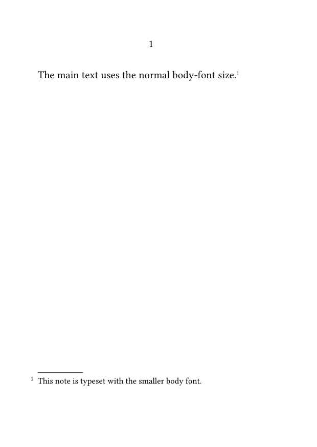
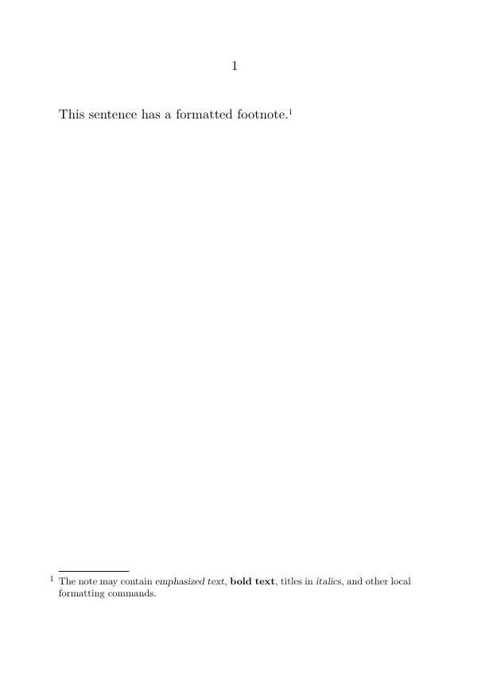
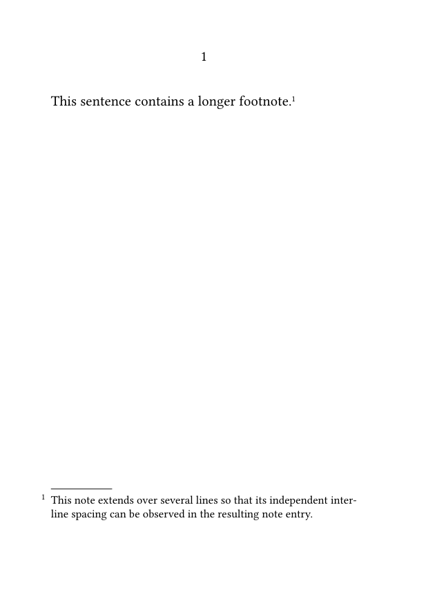
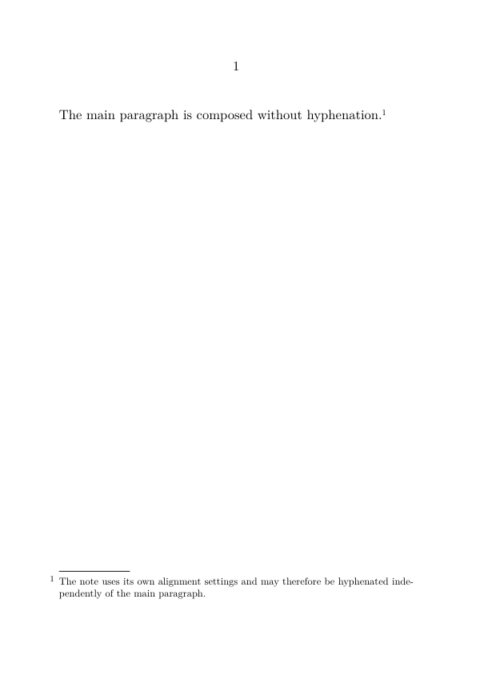
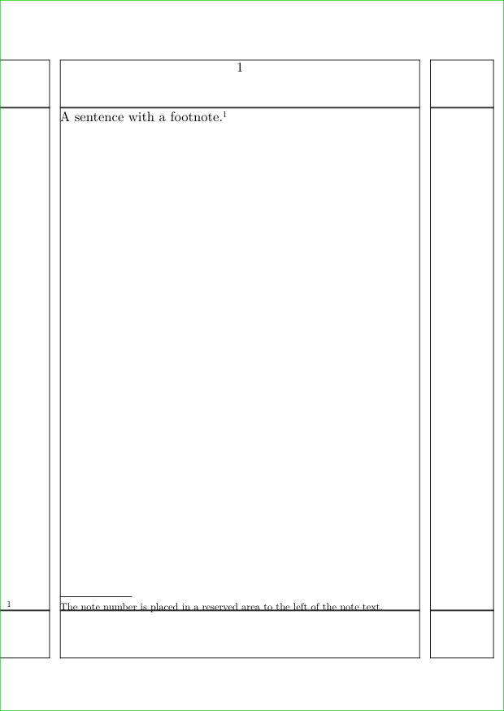
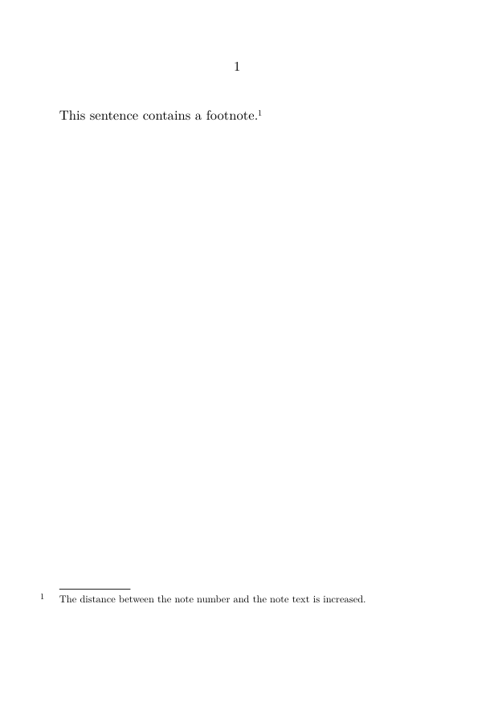
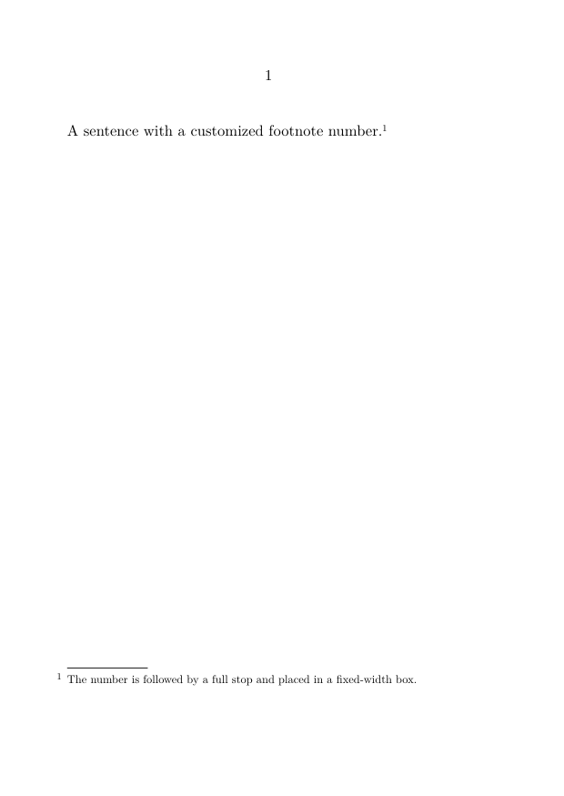
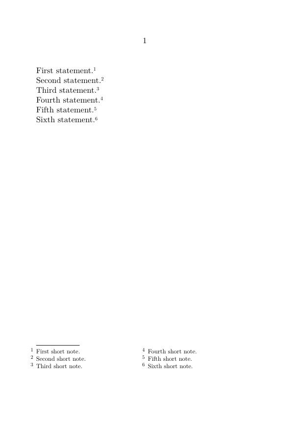
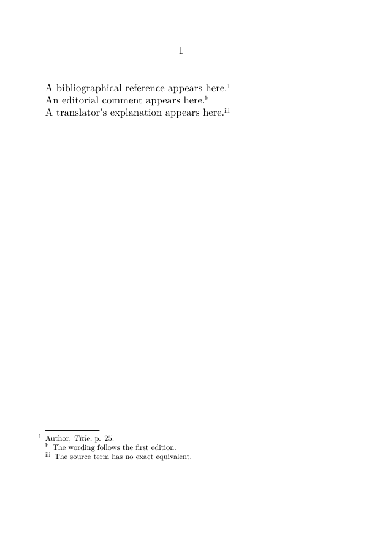
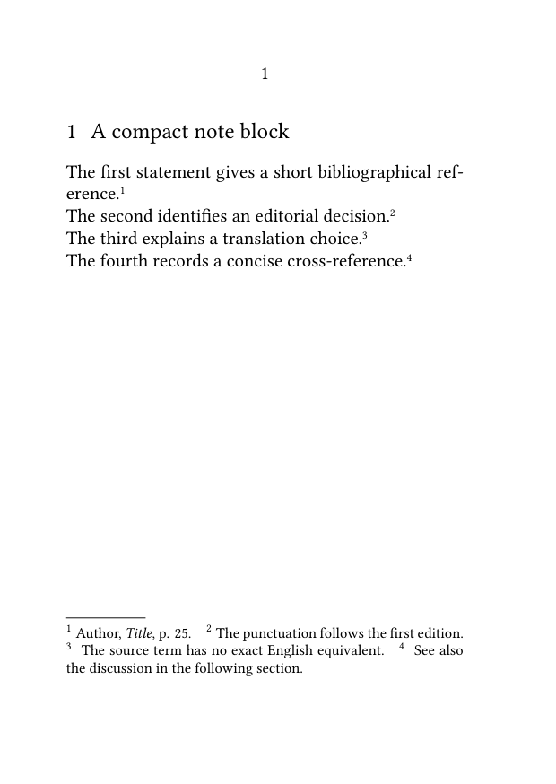

Footnotes in ConTeXt · Overview · Tutorial · How-to guides · Formatting footnotes · Reference · Explanation · Glossary
🚧 Under construction — This guide is currently being revised. Please do not modify its source code while this banner remains in place.
Guide 3 — Basic note operations · Previous: Separating a note mark from its text · How-to guides overview · Next: Placing footnotes at the end of a section or chapter
Contents
- 1 1. Goal
- 2 2. Distinguish note settings from notation settings
- 3 3. Change the footnote body font
- 4 4. Apply local formatting inside a note
- 5 5. Change interline spacing
- 6 6. Control alignment and hyphenation
- 7 7. Position the note number
- 8 8. Set footnotes in several columns
- 9 9. Set footnotes in paragraph form
- 10 10. Format several note series independently
- 11 11. Common mistakes
- 12 12. Complete example
- 13 13. What this guide has established
- 14 14. Next steps
1. Goal
Control the visual presentation of ordinary footnotes without changing their logical structure.
This guide shows how to configure:
- the body font used for note entries;
- local formatting inside note text;
- interline spacing;
- alignment and hyphenation;
- the position of note numbers;
- the distance between the number and note text;
- multi-column note blocks;
- paragraph-form footnotes;
- the independent presentation of several note series.
Result
Footnotes can be adapted to the typographical requirements of a publication while their marks, references, and note text retain the same logical structure.
2. Distinguish note settings from notation settings
Footnote formatting mainly involves two related setup commands:
| Command | Main role |
|---|---|
\setupnote[footnote][...]
|
Configures the note series, including its placement, body font, alignment, columns, paragraph form, and composition behaviour. |
\setupnotation[footnote][...]
|
Configures the visible structure of each note entry and the presentation of its printed number. |
A practical distinction
Use \setupnote for the note series as a whole.
Use \setupnotation for the visible arrangement of each note entry and its number.
Some typographical results depend on settings from both commands. Test combinations in the actual page layout before applying them to a complete document.
3. Change the footnote body font
Use the bodyfont key:
3.1. MWE: smaller note text
-
\setuppapersize[A6] \setupbodyfont [libertinus,10pt] \setupnote [footnote] [bodyfont=small] \starttext The main text uses the normal body-font size.\footnote {This note is typeset with the smaller body font.} \stoptext
-

The value small selects the smaller size defined by the current body-font environment. It is not an absolute point size.
Keep notes readable
Footnotes are often smaller than the main text, but excessive reduction makes long or densely argued notes difficult to read.
4. Apply local formatting inside a note
Ordinary ConTeXt formatting commands may be used inside note text.
4.1. MWE: local emphasis and font changes
-
\setuppapersize[A6] \starttext This sentence has a formatted footnote.\footnote {The note may contain \emph{emphasized text}, {\bf bold text}, titles in \emph{italics}, and other local formatting commands.} \stoptext
-

Apply emphasis, boldface, quotation marks, and titles according to the same editorial rules used in the main text.
5. Change interline spacing
A named setup can modify interline spacing only while note entries are being composed.
5.1. MWE: independent interline spacing
-
\setuppapersize[A6] \setupbodyfont [libertinus,10pt] \startsetups[footnote:interlinespace] \setupinterlinespace [line=2.8ex] \stopsetups \setupnote [footnote] [bodyfont=small, setups=footnote:interlinespace] \starttext This sentence contains a longer footnote.\footnote {This note extends over several lines so that its independent interline spacing can be observed in the resulting note entry.} \stoptext
-

The value 2.8ex is illustrative. Adapt it to the selected font, note size, and page width.
Why use a named setup?
The named setup isolates the interline configuration and applies it while ConTeXt is composing the footnote entries.
6. Control alignment and hyphenation
Footnote entries may use alignment and hyphenation settings different from those of the main text.
6.1. MWE: independent note alignment
-
\setuppapersize[A6] \setupnote [footnote] [align={normal,hyphenated}] \starttext \setupalign [nothyphenated, stretch, tolerant] The main paragraph is composed without hyphenation.\footnote {The note uses its own alignment settings and may therefore be hyphenated independently of the main paragraph.} \stoptext
-

The exact result depends on:
- the document language;
- the available hyphenation patterns;
- the width of the text area;
- the selected font;
- the tolerance and stretch settings.
Test with the correct document language
A hyphenation example is meaningful only when the relevant language and hyphenation patterns are active.
7. Position the note number
The printed number within each note entry can be positioned with \setupnotation.
7.1. Reserve space for the number
-
\setuppapersize[A6] \showframe \setupnotation [footnote] [location=left, width=1cm] \starttext A sentence with a footnote.\footnote {The note number is placed in a reserved area to the left of the note text.} \stoptext
-

The width key reserves horizontal space for the number.
Test the width with realistic numbers
A width that is sufficient for notes 1–9 may be too narrow for notes 100–999.
7.2. Control the distance between number and text
The distance key controls the horizontal space between the printed number and the note text.
-
\setuppapersize[A6] \setupnotation [footnote] [location=left, width=broad, distance=.75em] \starttext This sentence contains a footnote.\footnote {The distance between the note number and the note text is increased.} \stoptext
-

Choose a distance that separates the number clearly without creating an excessive gap.
The effect of distance depends partly on the selected notation alternative and number location.
7.3. Apply a custom command to the note number
A command may be used to add typographical material to the printed number.
\define[1]\MyFootnoteNumber
{\hbox to 1.5em{#1.\hss}}
The argument #1 contains the printed note number.
-
\setuppapersize[A6] \define[1]\MyFootnoteNumber {\hbox to 1.5em{#1.\hss}} \setupnote [footnote] [command=\MyFootnoteNumber] \setupnotation [footnote] [location=left, hang=1] \starttext A sentence with a customized footnote number.\footnote {The number is followed by a full stop and placed in a fixed-width box.} \stoptext
-

Test custom number commands carefully
A fixed-width command must accommodate the largest expected number and remain compatible with the selected notation alternative.
8. Set footnotes in several columns
When a page contains many short notes, the note block may be divided into columns.
8.1. MWE: two-column footnotes
-
\setuppapersize[A6] \setupnote [footnote] [n=2] \starttext First statement.\footnote{First short note.} Second statement.\footnote{Second short note.} Third statement.\footnote{Third short note.} Fourth statement.\footnote{Fourth short note.} Fifth statement.\footnote{Fifth short note.} Sixth statement.\footnote{Sixth short note.} \stoptext
-

The setting:
n=2
requests two columns in the footnote block.
Best suited to short notes
Columns work well for numerous compact entries. Long discursive notes are generally easier to read in a single column.
The result also depends on the available page width and the amount of note material.
9. Set footnotes in paragraph form
Successive note entries can be composed as a continuous paragraph rather than as separate blocks.
This is useful for compact textual notes and critical apparatuses.
9.1. MWE: paragraph-form footnotes
-
\setuppapersize[A6] \setupnote [footnote] [paragraph=yes] \setupnotation [footnote] [alternative=serried, width=broad, distance=.5em, display=no] \starttext First statement.\footnote{First compact note.} Second statement.\footnote{Second compact note.} Third statement.\footnote{Third compact note.} Fourth statement.\footnote{Fourth compact note.} \stoptext
-

The settings have complementary roles:
| Setting | Function |
|---|---|
paragraph=yes
|
Composes successive note entries in paragraph form. |
alternative=serried
|
Uses a compact arrangement suited to consecutive entries. |
width=broad
|
Provides flexible space for the printed number. |
distance=.5em
|
Controls the distance between the number and note text. |
display=no
|
Prevents each note entry from behaving as a separate displayed block. |
Paragraph form is especially useful for:
- textual notes;
- compact apparatuses;
- short bibliographical references;
- editions with many brief annotations.
Do not use paragraph form for long discursive notes
A sequence of long notes composed in one paragraph quickly becomes difficult to read and navigate.
10. Format several note series independently
Each custom note series may have its own body font, number conversion, and notation style.
This section concerns only presentation. For the creation and management of several series, see:
10.1. MWE: three independently formatted series
-
\setuppapersize[A6] \definenote [EdNote] [footnote] \definenote [TradNote] [footnote] \setupnote [footnote] [bodyfont=small] \setupnotation [footnote] [numberconversion=numbers] \setupnote [EdNote] [bodyfont=small] \setupnotation [EdNote] [numberconversion=characters, alternative=serried] \setupnote [TradNote] [bodyfont=small] \setupnotation [TradNote] [numberconversion=romannumerals, alternative=serried] \starttext A bibliographical reference appears here.\footnote {Author, \emph{Title}, p. 25.} An editorial comment appears here.\EdNote {The wording follows the first edition.} A translator's explanation appears here.\TradNote {The source term has no exact equivalent.} \stoptext
-

The visual differences express the distinct function of each note series while preserving their structural independence.
Configure each series by name
Settings applied to footnote do not automatically replace settings explicitly applied to EdNote or TradNote.
11. Common mistakes
11.1. Applying a setting at the wrong level
Body font, columns, alignment, and paragraph form belong primarily to \setupnote.
Number position, number conversion, spacing, and notation alternatives belong primarily to \setupnotation.
11.2. Making note text too small
A smaller body font must remain readable at the final printed size.
Always assess the result on paper as well as on screen.
11.3. Reserving too little width for numbers
Test the layout with the largest expected note number.
A document with hundreds of notes requires more space than a short example.
11.4. Combining columns with long notes
Columns may create narrow measures, awkward breaks, and fragmented reading when the notes are discursive.
11.5. Using paragraph form without suitable spacing
Paragraph form usually works best with a compact notation alternative and carefully chosen spacing between numbers, note text, and successive entries.
11.6. Formatting a custom series under the wrong name
Use exactly the same series name in:
\definenote [EdNote] [footnote] \setupnote [EdNote] [...] \setupnotation [EdNote] [...]
Most frequent cause of unexpected output
A setting may be valid but applied to the wrong level or to the wrong note series.
Check both the setup command and the series name.
12. Complete example
The following MWE combines a restrained set of commonly useful formatting choices:
- a smaller body font;
- independent interline spacing;
- paragraph-form notes;
- serried notation;
- consistent spacing between numbers and note text.
12.1. MWE: a compact and readable footnote block
-
\setuppapersize[A6] \setupbodyfont [libertinus,10pt] \startsetups[footnote:interlinespace] \setupinterlinespace [line=2.8ex] \stopsetups \setupnote [footnote] [bodyfont=small, paragraph=yes, setups=footnote:interlinespace] \setupnotation [footnote] [alternative=serried, width=broad, distance=.5em, display=no, numberconversion=numbers] \starttext \startsection[title={A compact note block}] The first statement gives a short bibliographical reference.\footnote {Author, \emph{Title}, p. 25.} The second identifies an editorial decision.\footnote {The punctuation follows the first edition.} The third explains a translation choice.\footnote {The source term has no exact English equivalent.} The fourth records a concise cross-reference.\footnote {See also the discussion in the following section.} \stopsection \stoptext
-

Compile the example and check that:
- the note entries use the smaller body font;
- the notes have independent interline spacing;
- successive entries are composed in paragraph form;
- the notation remains compact;
- the spacing between numbers and note text is consistent;
- the resulting block remains readable.
13. What this guide has established
To format footnotes:
-
use
\setupnotefor series-wide composition settings; -
use
\setupnotationfor the visible arrangement of note entries and numbers; -
use
bodyfontto change the note-text size; - apply a named setup for independent interline spacing;
- configure alignment and hyphenation separately when needed;
- reserve sufficient width for the largest expected number;
-
use
nto request several columns; -
use
paragraph=yeswith suitable notation settings for paragraph form; - configure each custom note series independently.
The central principle is to separate editorial structure from typographical presentation.
Formatting should clarify the note system without obscuring the relation between note marks, note text, and note entries.
14. Next steps
14.1. Continue with the next guide
- Define and manage multiple note series
- Place numbered notes in the margin
- Use local notes in tables, floats, and boxes
- Produce annotated and unannotated versions
14.3. Consult the documentation
- Consult the note-command reference
- Understand the note mechanism
- Check the terminology used in the footnote documentation
Guide 3 — Basic note operations · Previous: Separating a note mark from its text · How-to guides overview · Next: Placing footnotes at the end of a section or chapter
Footnotes in ConTeXt · Overview · Tutorial · How-to guides · Formatting footnotes · Reference · Explanation · Glossary